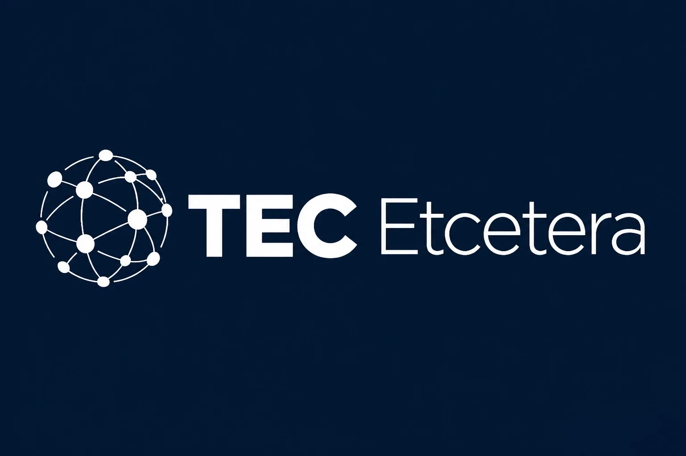

25 ans d’expertise en optimisation, intégration et transformation numérique
Performance tuning, indexation, SSRS, SSIS, migrations, architecture.
Epicor, Momentis, NuOrder API, Genius ERP, PLM, WMS, EDI.
.NET, C#, Angular, automatisation, IA appliquée au développement.
Telio, Modextil, Matt & Nat, Rand Accessories, Dex Clothing, Moose Knuckles, Bell Canada, Laura, Tribal Sportswear, Tecsys…